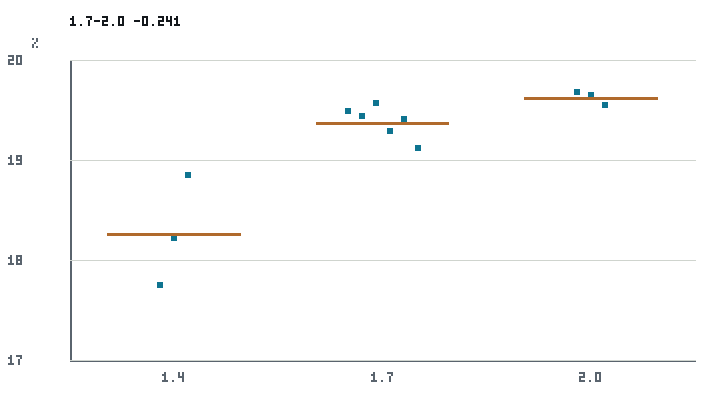

This page normally lets you walk through four scenes: the superseded headline, the audit, the
corrected data, and what a model can and cannot claim. With JavaScript disabled, the complete
result — every number and caveat — is in the generated
static text summary and the
summary image below. You can also download the
generated data.

Walk through the revision
·
1 · The headline we wanted
SUPERSEDED
The attractive first reading was an interior “fine-grind” extraction-yield maximum — a
peak at the middle dial. It came from a literal evaluation of the rounded published response-
surface coefficients at the central condition (about
· g, treated as if it were the real
level) together with a target that mixed milligram-scale solute masses with gram-scale TDS. We
are not hiding it; here is the whole revision, in order.
We keep the earlier interpretation visible. This is the project correcting its
own aggregation and interpretation — not a verdict on the source authors.
2 · The audit
A · The unit / observable contract
The first target aggregated milligram-scale solute masses with gram-scale TDS and
cup-mass quantities before converting to one coherent observable. A quick unit-lint makes the
mistake obvious:
The fix is to rebuild extraction yield from TDS on one consistent basis before any
aggregation, so the three dial cells are one comparable observable.
B · Printed precision
Evaluating the rounded published coefficients literally at the central condition gives about
· g. The project’s least-squares refit
gives · g, and the observed central mean
is · g. Limited printed precision makes the
literal absolute reconstruction unreliable; the refit sits near the observed mean.
Central-condition cup-mass value three ways: a literal evaluation of the rounded
published coefficients, the project refit, and the observed central mean.Show the numbers behind this plot (text table)
The · g figure is a
literal evaluation of rounded coefficients — not itself a coefficient and
not a real over-prediction. It is a precision artifact.
3 · The corrected data
On one coherent TDS-derived yield, here are the individual observed replicate points per
grinder dial. The default view is the raw points; you can overlay each cell’s mean and its own
sample SD.
Observed extraction yield by grinder dial: individual replicate points, with optional
cell means and cell-specific sample SDs. Horizontal offsets are for legibility only; the
plotted yields are the exact generated values.
·
Show the numbers behind this plot (text table)
The cell means are
·,
·, and
· % EY. The middle-minus-coarse
(dial 1.7 − dial 2.0) contrast is
· EY-points, with a Welch 95%
interval of [·,
·] EY-points (it excludes zero).
The means are ordered, and the middle dial is below the coarse dial. This rules
out an observed interior maximum in these cells. It does not establish a statistically monotone
grinder response across the full range.
These are one machine, one coffee, one campaign, at a fixed nominal condition.
A grinder dial is not a particle size and is non-portable to another grinder without a
calibrated adapter. The achieved flow, temperature, and pressure differ across the three dial
settings (a design confound), and there is no replication across machines or coffees. This is not
a universal “too-fine” claim.
4 · A model can draw it without identifying it
A channeling model can generate a small interior feature. Its prominence is
· EY-points at 5 bar and
· EY-points at 9 bar — both smaller
than the mean within-cell sample SD of
· EY-points.
Model interior prominence at two pressures against the mean within-cell sample SD.
The tested feature is smaller than the descriptive replicate spread.Show the numbers behind this plot (text table)
This supports model capacity: the model can draw such a feature. It does
not identify channeling as the cause, and the
· EY-point spread is a descriptive
reference — not a minimum-detectable-effect and not a noise
floor.
Each panel carries its own evidence label
The global OBSERVED badge refers to the corrected observed replicate
result only. The other panels are labelled separately:
What this does not prove
It does not prove that self-correction makes every current result correct —
it documents one downgrade.
It does not show a universal “too-fine optimum”, and a grinder dial is
not a portable particle-size scale.
It does not disprove channeling or identify it as the cause — the data
simply do not identify it; the model only shows capacity.
The fine-grind reversal is not called “fake”; the interior maximum is just
not present in these observed cells.
Scope.·
Caveat.·
Fidelity ceiling.·
Trace every number
Producer: puckworks.harness.result1_magnitude_comparison;
public snapshot producer: puckworks.public.analysis_autopsy.pv04_values.
{kind=link}